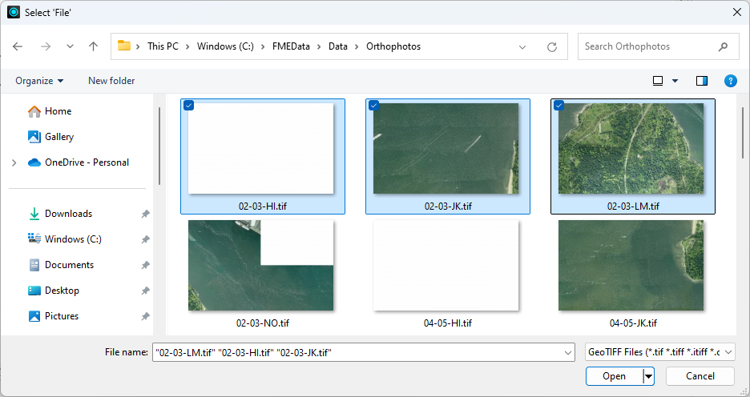
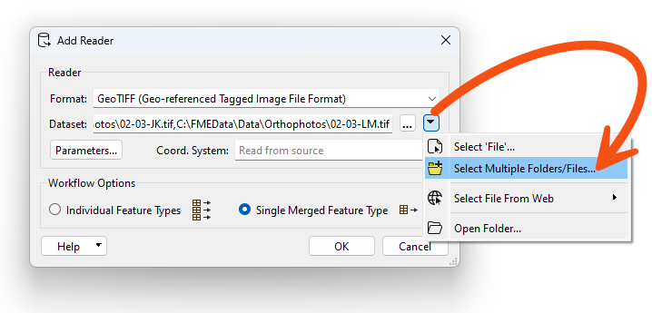
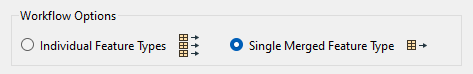

This lesson summarizes parts of the Create Workspaces With Multiple Readers and Writers lesson from the Design Workspaces for Advanced Reading and Writing course. If you are familiar with it, feel free to skip it.
Learning Objectives
After completing this lesson, you'll be able to:
By their very nature, data integration workflows usually bring together multiple datasets, often stored in different formats. Naturally, most data integration workflows will read data from multiple locations in multiple formats. One can accomplish this using multiple readers in FME.
One can also use multiple writers or multiple writer feature types to send data to multiple locations. This workflow can meet several common needs:
With FME, you can bring multiple datasets together using many techniques:
We'll cover some of these techniques in this lesson.
This lesson summarizes parts of the Create Workspaces With Multiple Readers and Writers lesson from the Design Workspaces for Advanced Reading and Writing course. If you are familiar with it, feel free to skip it.
This course focuses on reading and writing multiple datasets with a single workspace. If you'd like to learn about batch-running a workspace many times on a list of datasets, please see the Design for Performance course.
An FME workspace is not limited to any particular number of readers or writers; readers and writers can be added to a workspace at any time, any number of formats can be used, and there does not need to be an equal number of readers and writers.
For example, the Navigator window shows that this workspace contains two readers and three writers of different data types and formats!

Reminder: readers and writers don’t appear as objects on the Workbench canvas. Their feature types do, but readers and writers don't.
Instead, they are represented by entries in the Navigator window, as in the above screenshot.
It's possible to read multiple datasets or layers using a single reader. There are a few ways to accomplish this goal.
Reading from Multiple Files
If you wish to read more than one file at a time using a single reader, it's simply a matter of selecting multiple files. You can do this in three ways when specifying the Source Dataset parameter:
1. When using the File Browser, Ctrl+ or Shift+click on Windows (or Cmd+ or Shift+click on Mac).

2. Click the drop-down and choose Select Multiple Folders/Files.

3. Provide a comma-delimited list of files, e.g., C:\FMEData\Data\Orthophotos\02-03-HI.tif,C:\FMEData\Data\Orthophotos\02-03-JK.tif [...] etc.
Regardless of the method, these files will be read as a single feature type.

This technique is beneficial when dealing with tiled or otherwise separated datasets (usually with the same schema) that you wish to process as a whole. For example, you might read multiple aerial or satellite photos to create a mosaic raster or to read and process multiple CAD files simultaneously.
The Source Dataset parameter for readers is published by default, allowing end users to select multiple files at runtime.
Directory and File Pathnames Reader
A more advanced way to read multiple datasets is using the Directory and File Pathnames reader with a FeatureReader. This reader lets you generate source dataset paths using glob expressions, generating one feature per dataset path. You can then send these features to a FeatureReader to read the files at those locations.
Wildcards and Glob Expressions
What if you need to read multiple files but don't know their path in advance or you want an easy way to "greedily" accept input datasets?
You can accomplish this by using wildcards in the Source Dataset parameter. This technique will let you specify a rule-based method for reading in multiple datasets. You can use any special characters specified in the documentation to construct glob expressions to specify precisely which files to read.

Merging Feature Types
What if you have a large number of feature types (tables, layers, etc.) in your source data (again, usually with the same schema), and you want to apply the same processing to them all or want to keep your workspace simple without a large number of reader feature types? In this case, you can merge feature types.
You can merge feature types when adding a Reader and selecting Single Merged Feature Type under Workflow Options.

You can merge feature types after adding a reader feature type by double-clicking it to open its parameters and checking Merge Feature Type.

By default, the Merge Filter is set to *, which will read all feature types in the source data. However, this filter also accepts exact match, wildcard, and regular expression Filter Types, giving you more control over which feature types to read. The wildcard option allows the same glob expressions mentioned earlier.
After merging, you can still access the name of the original feature type via the
fme_feature_typeattribute.You can read more about merged feature types in the documentation.
Later in this learning path, you will learn how to use merged feature types to build dynamic workspaces that read data without knowing the schema in advance.